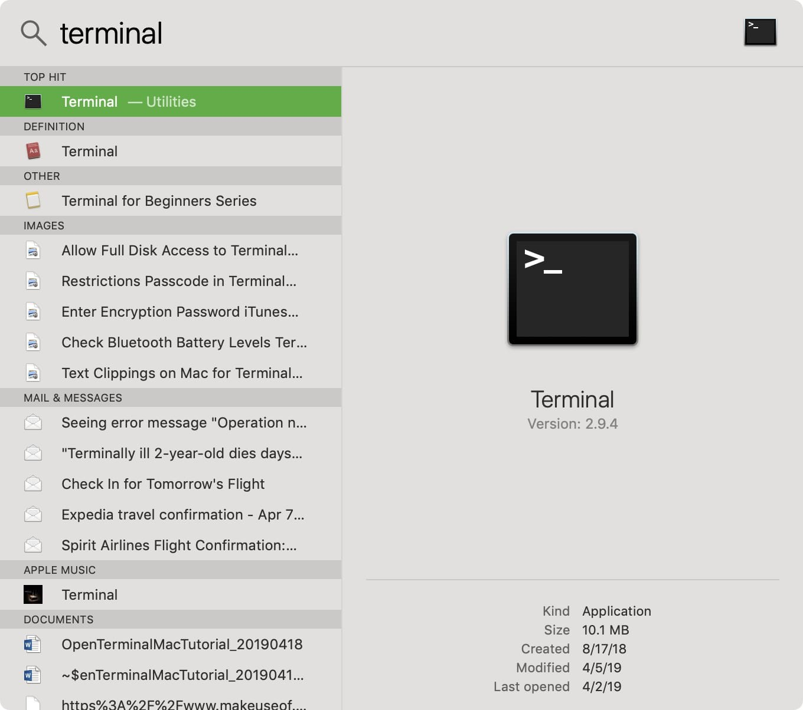

Getting Started Using REST API & UI
The provided REST API makes it easy to integrate the SBTi temperature alignment tool as a micro-service in your current IT infrastructure. Optionally you can also run the REST API with a small frontend, which makes testing easier.
Usage
The complete REST API reference is available here.
Installation
The tool is containerized in a Docker container, which enables easy cloud and on premise deployments. We will provide instructions here for installing the REST API either on your local machine or on Amazon AWS.
Locally
Step 1: Install Docker desktop
For testing locally on your own Windows or Mac PC you first need to have a Docker engine running. For Linux users, this is natively available in your OS and you can skip step 1. Docker provides installation instructions for Windows and Mac. After you have finished these installation guides, continue to step 2.
Step 2: Download and run the SBTi container.
The project consists of two containers, the API and the UI, both of which are available on Docker Hub. You can choose whether you only want to run the API or also the UI. To run them, you need to download a compose file. If you only want to run the API, you need to use this file, if you also want the UI, you should use this file.
Now download the file of your choice and store it as docker-compose.yml in your home directory.
For Windows users
Open Command Prompt from a Start Menu Search. Select “Run as administrator”.
You can open the Command Prompt by clicking Start and then typing “cmd” into the search box.
{kind=link}
Enter the following command and hit enter:
docker-compose up
{kind=link}
Note
This command assumes that your command prompt is currently in the same directory as the docker-compose.yml file that you downloaded earlier.
This command starts retrieving the latest version of the tool and will expose it at localhost:5000
Open your browser and go to http://localhost:5000 to access the tool. If you are running the UI, the UI will be on http://localhost:5000 and the API on http://localhost:5001

For Mac users
One of the quickest and easiest ways to open Terminal on Mac is with Spotlight Search 1. If you have the Spotlight Search button in your menu bar, click it. Otherwise, you can use the keyboard shortcut Command + Space 2. Type in “Terminal” 3. You should see the Terminal application under Top Hit at the top of your results. Double-click it and Terminal will open.
{kind=link}
Enter the following command and hit enter:
docker-compose up
Note
This command assumes that your command prompt is currently in the same directory as the docker-compose.yml file that you downloaded earlier.
This command starts retrieving the latest version of the tool and will expose it at http://localhost:5000
Open your browser and go to http://localhost:5000 to access the tool. If you are running the UI, the UI will be on http://localhost:5000 and the API on http://localhost:5001
Amazon AWS
These instructions assume that you have installed and configured the Amazon AWS CLI tools with an IAM account that has at least write access to ECS and EC2 and the capability of creating AIM roles.
Configure the cluster. You can update the region and names as you see fit:
ecs-cli configure --cluster sbti-ecs-cluster --region eu-central-1 --config-name sbti-ecs-conf --cfn-stack-name sbti-ecs-stack --default-launch-type ec2
Create a new key pair. The result of this command is a key. Store this safely as you can later use it to access your instance through SSH:
aws ec2 create-key-pair --key-name sbti
Create the instance that will run the image. Here we used 1 server of type t2.medium. Change this as you see fit:
ecs-cli up --keypair sbti --capability-iam --size 1 --instance-type t2.medium --cluster-config sbti-ecs-conf
Update the server and make it run the docker image:
ecs-cli compose -f docker-compose_aws.yml up --cluster-config sbti-ecs-conf
Now that the instance is running, we cannot access it yet. That is because NGINX only listens to localhost. We need to change this to make sure it is accessible on the WWW.
Login to the Amazon AWS console
Go to the EC2 service
In the instance list find the instance running the Docker image
Copy the public IP address of the instance
In config/api-nginx.conf update the server name to the public IP.
Now we need to rebuild and re-upload the image:
docker-compose -f docker-compose_aws.yml build --no-cache docker-compose -f docker-compose_aws.yml push ecs-cli compose -f docker-compose_aws.yml up --cluster-config sbti-ecs-conf --force-update
You should now be able to access the API.
Warning
This will make the API publicly available on the World Wide Web! Please note that this API is not protected in any way. Therefore, it is recommended to run your the data in a private subnet and only access it through there. Alternatively, you can change the security group settings to only allow incoming connections from your local IP or company VPN.